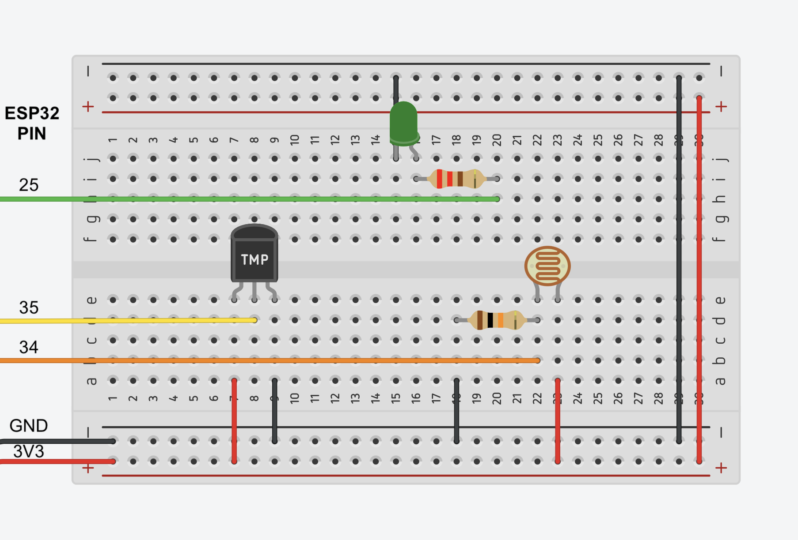
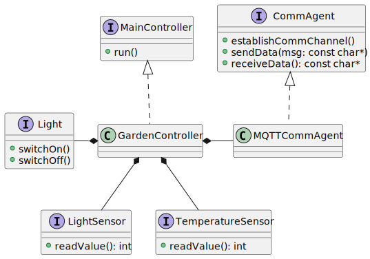
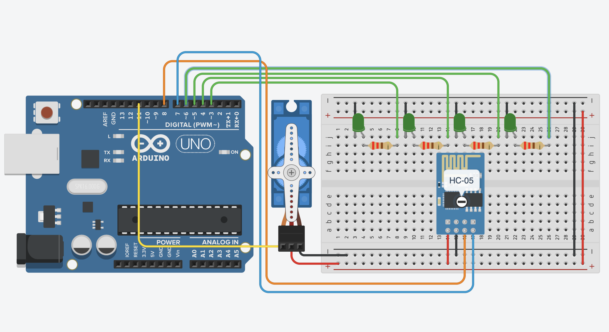
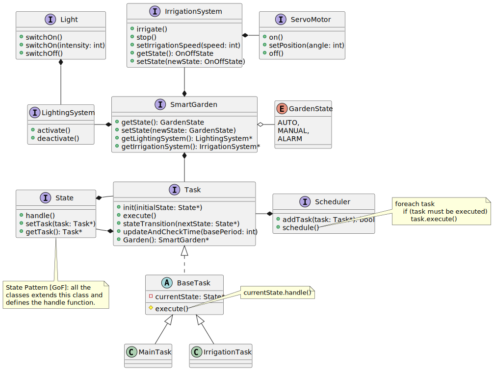
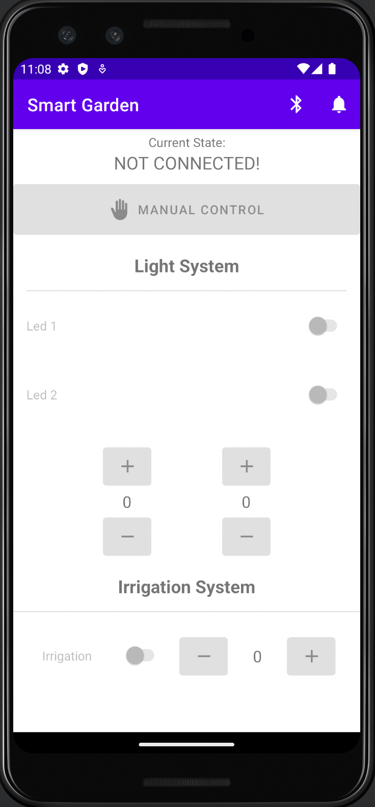

This is a short report explaining the modeling choices made along the development process of this assignment.
All the requirements of the system can be found here.
Here a short video demonstrating the logic of the system (hosted on restricted Unibo account).
The Garden Sensor Board (ESP) - as described in details in the requirements - is the component which monitors the state of the garden, reading and sending, through MQTT, the sensor data to the garden service app.
Below the schema of the circuit (made with Tinkercad):
The software has been conceived as follows and is presented in the following UML schema:
CommAgent is the agent, i.e. the active component, which exposes a general API in order to takes care of all comunications between the board and the outside world. This interface is implemented by a concrete MQTTCommAgent which encapsulates all the logic for connecting, sending and receiving messages through MQTT. This design follows the OCP principle: if it were necessary to communicate also via HTTP, it would be possible to simply add a new concrete implementation of the CommAgent.MainController is the controller of the board and exposes a run() method which is periodically called by the main. The concrete controller, the GardenController, for each execution of the run method reads all the sensor status, serializes them inside a Json format, and delegates the data sending to the MQTTCommAgent.
The garden service is the subsystem acting like a bridge between all other subsystems: it receives via MQTT the sensor data measured by the garden sensor board and forwards them through the serial line to the garden controller; moreover, it stores them in order to update the garden dashboard when a new GET request has been performed.
The main components of the subsystem are:
HTTAgent: active component handling HTTP requests (implemented in Vert.x);MQTTAgent: active component handling MQTT communications (implemented in Vert.x);SerialListener: component receiving messages sent on the serial line in order to update the state of the garden.The garden controller is the embedded subsystem which controls the irrigation system (simulated by means of a servo motor) and the lighting one (simulated by four LEDs).
Below the schema of the circuit (made with Tinkercad):
It has been conceived using a tasks-based architecture and synchronous Finite State Machines with a fully-static scheduler. For this purpose have developed 2 different tasks, with different levels of abstraction: a Main Task and Irrigation Task.
The Main Task is the core task of the (sub-)system. It checks whether new data has arrived, both via the Serial line from the garden service or via bluetooth from the Android App. In both cases, when such an event happens, it reads the data and set up the system accordingly to them. Finally, it sends through the Serial line and blueetooth the new state of the garden in order to propagate the state info in the other subsystems.
This task is executed every 500ms.
The Irrigation Task is the task that is responsible for the irrigation subsystem and is composed of only two states: On and Off.
It's executed every 100ms.

[NOTE 1] the communication between the two tasks is achieved with a shared variable in which is stored the state of the irrigation system (in the source code this variable is encapsulated inside the IrrigationSystem class and exposed via a getter).
[NOTE 2] it could be implemented an another task which takes care of the lighting subsystem. However, for the actual requirements of the system, it's unnecessary (and would generate a lot of unnecessary boilerplate) because the (de)activation of the lighting subsystem is "atomic": is instantly executed when new data arrive, differently from the irrigation system which requires to be continuously updated even when no data is coming.
The OO organization of the code is described from the following UML diagram:

The mobile app makes it possible to manually control the irrigation system and lighting one interacting with the garden controller via Bluetooth.
It is a simply html page with linked a JS script which periodically sends an ajax GET request to the service to retrieve the last set of data (in Json format) and display them in a chart line, in addition to the garden state info.